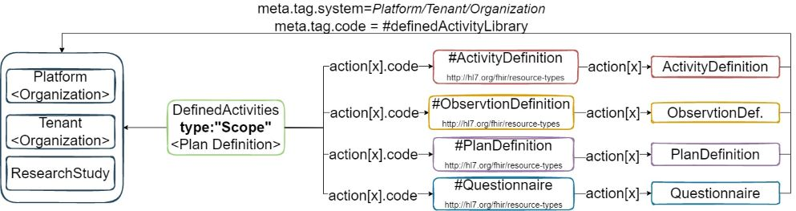

HL7 FHIR Implementation Guide: Example IG Release 1 - US Realm | STU1
1.0.0 - STU1
HL7 FHIR Implementation Guide: Example IG Release 1 - US Realm | STU1
1.0.0 - STU1
HL7 FHIR Implementation Guide: Example IG Release 1 - US Realm | STU1 - Local Development build (v1.0.0). See the Directory of published versions
Defined activities are the characterization of a kind of activity, i.e. they define “what” an activity is. Most activities included in a study are not completely brand new, rather they are usually common tests or procedures, or they may be composite activities that are composed of several component activities that form a standard treatment strategy or a new treatment strategy used in several different studies. These activities are reusable concepts that essentially form a global library of activities that can be referenced in studies being planned, implemented, executed and evaluated. These activities can be defined once and referenced in many different studies to save the time and effort of re-entering data and, more importantly, to make the semantic connection between an activity being used in two different studies or at two different points in the same study. This notion of activities being defined once and referenced in many studies is the core idea of the defined activity class and its subclasses. This part of the model is what the BRIDG modeling team calls the “Defined Pillar”. For those familiar with HL7 moodCodes, this is somewhat similar to the defined mood. (BRIDG User’s Guide Release 5.3.1 March 2019 Page 19-20)
From the definition above, there are three distinct contexts to keep in mind. One should define the “where”, “who” and “what” of each library based on context.
The ideal pattern should be reusable in the different contexts above. FHIR’s PlanDefinition resource provides a hierarchical grouping capability of referenced resources. In this context, one can think of PlanDefinition as an associative entity from RDBMS, in that the PlanDefinition contains the references to the concrete defined activities (differing in resource types).
This pattern will leverage PlanDefintion to define a collective list of Defined Activites from each of the contexts “Where” above:
The platform owner has defined two Questionnaires and two Activity Definitions and associated them at the platform level. The Platform-DefinedActivities (PlanDefintion) is associated with the platform’s organization through the use of the PlanDefinition.meta.tag. The Platform-DefintionActivities is asigned a the type of #PlatformDefinedActivities, which provides a distinguishing search criterion within a planned definition service.
Others within the platform are able to obtain the Platform-DefintionActivities and utilize/reference the contained activities for their use based on the platform’s business rules.
Instance: Platform-DefinedActivities
InstanceOf: PlanDefinition
Usage: #example
Title: "Platform-FHIR DefinedActivities"
Description: "Platform DefinedActivities"
* id = "Platform-DefinedActivities-001"
* status = #active
//meta.tag.system : url to either the Organization (Platform || Tenant) or potential ResearchStudy
* meta.tag[+].system = "Organization/5b90647f-adbe-4880-a670-bf9da0b3e39d"
* meta.tag[=].code = #definedActivityLibrary
* type = #PlatformDefinedActivities
* action[+].type.coding.code = #Questionnaire
* action[=].type.coding.system = "http://hl7.org/fhir/resource-types"
* action[=].action[+].definitionUri = "Questionnaire/eb57023c-1b1d-4777-9430-d9596bdcd52c"
* action[=].action[=].title = "Platform-Questionnair1 title"
* action[=].action[+].definitionUri = "Questionnaire/eb57023c-1b1d-4777-9430-d9596bdcd52d"
* action[=].action[=].title = "Platform-Questionnair2 title"
* action[+].type.coding.code = #ActivityDefinition
* action[=].type.coding.system = "http://hl7.org/fhir/resource-types"
* action[=].action[+].definitionUri = "ActivityDefinition/32c0f9f2-36bd-42c4-a8e5-f045c2d1bfb0"
* action[=].action[=].title = "Platform-ActivityDefinition1 title"
* action[=].action[+].definitionUri = "ActivityDefinition/4deb634a-6119-417f-a3e4-175417a0f5a7"
* action[=].action[=].title = "Platform-ActivityDefinition2 title"

Instance: Tenant-DefinedActivities
InstanceOf: PlanDefinition
Usage: #example
Title: "Tenant DefinedActivities"
Description: "Tenant DefinedActivities"
* id = "Tenant-DefinedActivities-001"
* status = #active
//meta.tag.system : url to either the Organization (Platform || Tenant) or potential ResearchStudy
* meta.tag[+].system = "Organization/7faf6345-c323-4107-bd63-e3069ac75a13"
* meta.tag[=].code = #definedActivityLibrary
* type = #TenantDefinedActivities
* action[+].type.coding.code = #Questionnaire
* action[=].type.coding.system = "http://hl7.org/fhir/resource-types"
* action[=].action[+].definitionUri = "Questionnaire/eb57023c-1b1d-4777-9430-d9596bdcd52c"
* action[=].action[=].title = "Platform-Questionnair1 title"
* action[=].action[+].definitionUri = "Questionnaire/bccff427-22dd-47ec-a292-0965efe34551"
// Tenant created two tenant specific Questionnairs
* action[=].action[=].title = "Tenant-Questionnair1 title"
* action[=].action[+].definitionUri = "Questionnaire/92b1df45-94ec-4c4f-bfe5-430c08dc9496"
* action[=].action[=].title = "Tenant-Questionnair2 title"
* action[+].type.coding.code = #ActivityDefinition
* action[=].type.coding.system = "http://hl7.org/fhir/resource-types"
* action[=].action[+].definitionUri = "ActivityDefinition/32c0f9f2-36bd-42c4-a8e5-f045c2d1bfb0"
* action[=].action[=].title = "Platform-ActivityDefinition1 title"
* action[=].action[+].definitionUri = "ActivityDefinition/4deb634a-6119-417f-a3e4-175417a0f5a7"
* action[=].action[=].title = "Platform-ActivityDefinition2 title"
// Tenant created two tenant specific ActivityDefinitions
* action[=].action[+].definitionUri = "ActivityDefinition/4585d305-06c0-46ed-8bea-23f4cfcb5cc1"
* action[=].action[=].title = "Tenant-ActivityDefinition1 title"
* action[=].action[+].definitionUri = "ActivityDefinition/035c2a2e-9fd3-4e96-a83c-66eda21cc75d"
* action[=].action[=].title = "Tenant-ActivityDefinition2 title"
From the defined activity perspective (resources: Questionnaire, PlanDefinition, ActivityDefinition), the pattern will re-leverage meta.tag in each resource to represent ownership/where the activity was defined (Platform, Tenant/Sponsor, Study).
Instance: FHIR-Questionnaire
InstanceOf: Questionnaire
Usage: #example
Title: "Example-FHIR Questionnaire"
Description: "FHIR Questionnaire"
* status = #active
* meta.tag[+].system = "Organization/7ad0f876s76dfa7d98a5s67"
* meta.tag[=].code = #definedActivityLibrary
IG © 2021+ ClinicalTrialExample. Package ClinicalTrialExample#1.0.0 based on FHIR 5.0.0-ballot. Generated 2022-11-29
Links: Table of Contents |
QA Report |
Version History |
 |
|